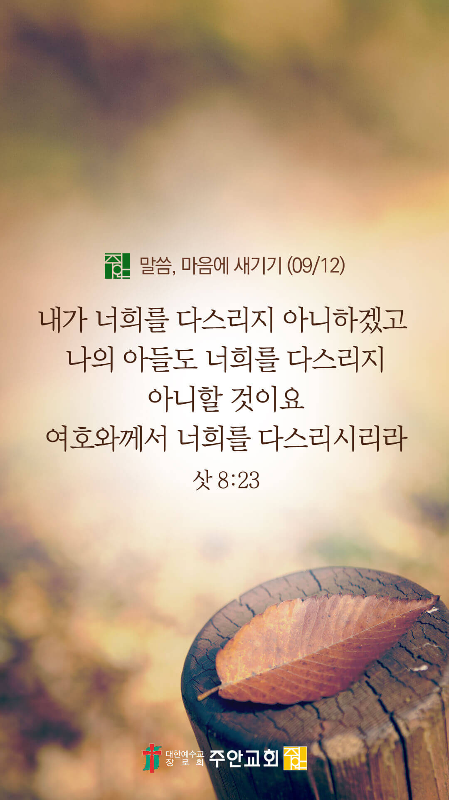

온라인 기도실 안내
2021년 09월12일(일)~09월 18일(토)
- 온라인 기도실은 온 회중이 함께 주님 앞으로 나아가는 자리입니다
- 30분 정도 여유를 가지고 하시기 바랍니다
- 말씀과 묵상, 찬양과 기도로 나아갑니다
- 배경 음악이 나올 수 있습니다 볼륨을 조절해주세요
준비가 되셨으면 아래의 버튼을 눌러주세요
할렐루야
내 영혼아 여호와를 찬양하라
시 146:1
- 가사를 묵상하며 읽습니다
주님의 시간에 아름답게 모든것 변하리
주님 나의 갈길을 인도하여 주시니
주의 뜻을 따라서 살리라
주님의 시간에 아름답게 모든 것 변하리
나의 정성 다하여 주를 찬송하오니
주의 뜻을 이루어 주소서
할렐루야
내 영혼아 여호와를 찬양하라
시 146:1
주님의 시간에 by 비컴퍼니
위의 찬양이 끝나면 말씀읽기를 눌러주시면 됩니다
주의 말씀은 내 발에 등이요
내 길에 빛이니이다 (시119:105)
오늘의 말씀입니다
음악 소리가 크면 조절하시기 바랍니다

마음의 묵상
삿 8:23
“기드온이 그들에게 이르되 내가 너희를 다스리지 아니하겠고 나의 아들도 너희를 다스리지 아니할 것이요 여호와께서 너희를 다스리시리라 하니라”
1. 당신의 인생을 주님께 전적으로 맡기고 의지하시나요?
2. 당신의 가정을 다스리시는 이는 오직 하나님이심을 고백하나요?
3. 자녀들의 인생을 주께서 다스리실 줄 믿고 맡기시나요?
왕이신 하나님을 의지합니다
회개, 삶의 방향을 바꾸는 결정
하나님은 우리의 작은 용서를 귀히 보십니다
“우리가 우리에게 죄 지은 자를 사하여 준 것 같이 우리 죄를 사하여 주시옵고”
- 마가복음 6:12 -
3분 정도 회개하며 주님 앞에 나아갑니다
사슴이 시냇물을 찾기에 갈급함 같이
시 42:1
- 다음의 말씀을 소리 내어 읽습니다
[마태복음 6장 14-15절]
14 너희가 사람의 잘못을 용서하면 너희 하늘 아버지께서도 너희 잘못을 용서하시려니와
15 너희가 사람의 잘못을 용서하지 아니하면 너희 아버지께서도 너희 잘못을 용서하지 아니하시리라
하나님 나라
1. 하나님의 나라가 속히 이 땅에 임하게 하소서
하나님 아버지,
무슬림 강성 지역에서 핍박과 차별, 여러 위협을 당하고 있는 성도들과 선교사님들, 그리고 교회들을 지켜주소서.
이들의 인내와 사랑과 섬김을 통하여 주변 무슬림들에게 복음이 전파되어, 무슬림 강성 지역에서도 수많은 영혼들이 주님께로 돌아오게 하소서.
간절한 마음으로 3분 정도 기도합시다
남과 북
2. 남북한이 속히 복음으로 통일되게 하소서
하나님 아버지,
북한의 지도자들이 핵무기로 한반도를 위협하고 미국을 압박하려는 불순한 태도를 멈추게 하시고,
그들에게 진정으로 북한 주민들을 사랑하고 북한 주민들의 삶을 챙기는 선한 마음을 주시옵소서.
고통 가운데 있는 북한 주민들에게 필요한 양식과 의료품을 채워주소서.
간절한 마음으로 3분 정도 기도합시다
대한민국
3. 우리나라가 하나님을 경외하는 나라가 되게 하소서
하나님 아버지,
하나님의 뜻에 반하는 법안(건강가정기본법, 평등법 등)들이 폐기되게 하소서. 대선을 준비하는 각 정당에서 하나님을 경외하며 국민들을
사랑하는 참된 지도자들이 세워지게 하시고, 이들을 통하여 우리나라가 하나님이 기뻐하시는 나라와 민족이 되게 하소서.
간절한 마음으로 3분 정도 기도합시다
한국교회
4. 한국교회가 성령으로 새롭게 부흥되게 하소서
하나님 아버지,
한국교회가 말씀에 순종하며 말씀대로 살아가는 교회가 되게 하소서. 성도들로부터 목회자들까지 모든 이들이 하나님의 말씀을 사랑하며,
말씀을 읽고, 말씀대로 살아가며, 말씀에 순종하는 거룩한 백성들이 되게 하시고, 한국의 모든 교회가 말씀의 공동체가 되게 하소서.
간절한 마음으로 3분 정도 기도합시다
주안교회
5. 주안교회가 다음 세대를 세우는 선교적 교회가 되게 하소서
하나님 아버지,
주안의 모든 성도들의 마음 밭이 옥토와 같은 마음 밭이 되게 하소서. 혹시라도 우리의 마음의 밭이 길 가와 같이 무디어지고
강퍅한 마음이라면 성령의 불로 우리의 마음을 녹여주시고, 정결케 하사, 옥토로 변화시켜 주옵소서. 그래서 하나님의 말씀에 순종하고
행함으로 100배의 결실을 맺어 하나님께 영광을 돌리게 하소서.
간절한 마음으로 3분 정도 기도합시다
감사의 기도
- 오늘 기도를 인도하신 주님께 감사를 올려드립니다
- 아래의 구절을 읽고 주님께 감사의 마음을 올려드립시다
“그러므로 우리가 낙심하지 아니하노니
우리의 겉사람은 낡아지나
우리의 속사람은 날로 새로워지도다”
- 고린도후서 4장 16절 -
고요한 가운데 잠시 침묵하시기 바랍니다
파송, 세상을 향하여
- 오늘의 온라인 기도를 마쳤습니다
기도를 들으신 주님께서 평안히 가라 하십니다
주님께서 우리와 함께 하시니 두려울 것이 없습니다
새벽을 깨우며
- 새벽기도회 안내입니다